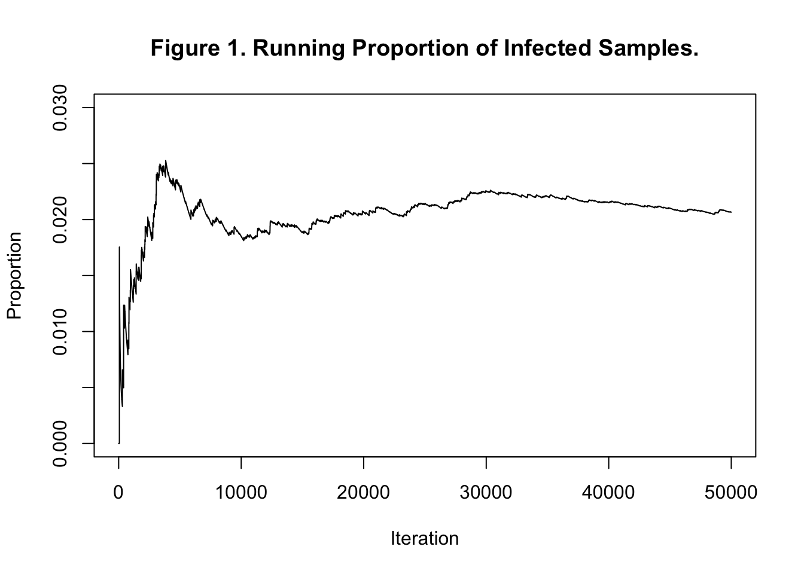
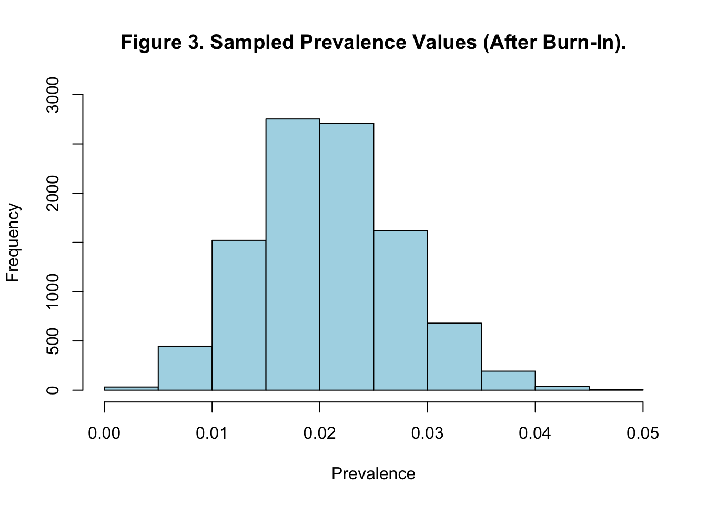
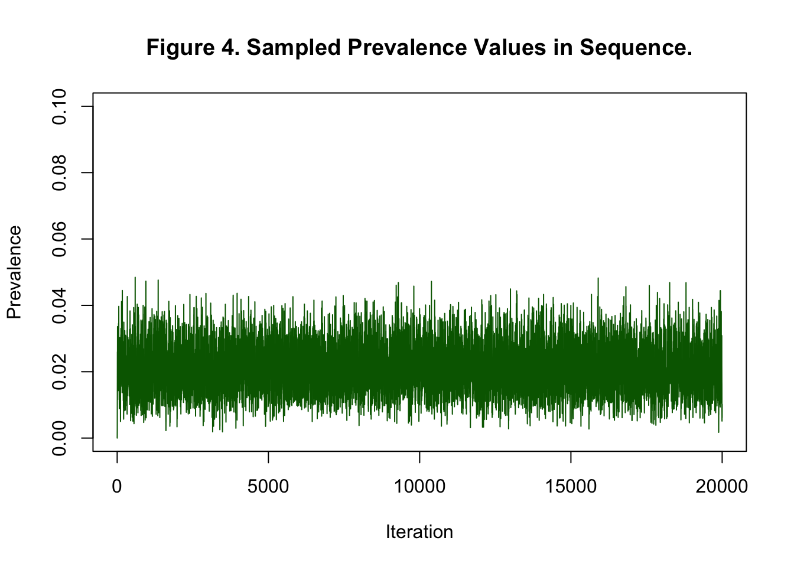

This presents an elementary Gibbs Sampler that was developed in the paper: Elementary Uses of the Gibbs Sampler: Applications to Medical Screening TestsSuess, Frazer & Trumbo (200-). Supplementary material for the paper may be found here.
The context of the example is the need to estimate the prevalence of a disease at a particular location from information about the sensitivity and specificity of a laboratory test for detecting the presence of a disease.
Two examples are given. The first example considers a situation where enough information is given so that prevalence can be estimated by an iterative procedure workin with the relevant conditional distributions. The second example presents a simple Bayesian calculation where the posterior distribution for disease prevalence is estimated by assuming a Beta prior. The merit of the example is that it illustrates a working Gibbs Sampler algorithm in a simple setting where the problem requires only understanding some basic terminology relating to tests and the Gibbs Sampler is constructing a simple, two state, Markov chain.
Random Variable Definitions and Test Terminology
The random variable D takes on the values 0 or 1, indicating no disease detected or has disease respectively. The random variable T indicates that the test detected the disease when T = 1 or did not detect the disease when T = 0.
Sensitivity
\(\eta\) = P(T = 1 | D = 1) This is the conditional provability that T = 1, the presence of disease will be detected, when in fact, disease is present.
Specificity
\(\theta\) = P(T = 0 | D = 0) The conditional probability that test will not report the presence of disease when disease is not present.
Prevalence
\(\pi\) = P(D = 1) = P(D = 1, T = 1) + P(D = 1, T = 0) = P(D = 1 | T = 1)P(T = 1) +
Section 4 of the paper provides a very simple Gibbs Sampling algorithm to estimate the prevalence of the disease when all of the parameters \(\eta\), \(\theta\), \(\gamma\), \(\delta\) are known.
The structure of the iterative algorithm is as follows:
Step: m = 1
Assume an initial value for prevalence, i.e. assume a value of either 1 or 0 for the random variable D
Simulate a value for the random variable T. If D = 1 draw from a binomial distribution with parameter \(eta\). Else, if D = 0 draw from a binomial distribution with parameter (1 - $)
Step: m = 2
Using the value of T computed in step m = 2 compute simulate another value for D. If T = 1 draw form a binomial distribution with parameter \(\gamma\). Else, if T = 0 then draw from a binomial distribution with parameter \((1 - \delta)\).
Keep a running total of the average value for D. This will converge to the estimate of prevalence. Continue iterating in the way for M2 steps. Discard the first M1 simulated numbers report the final value of prevalence.
The basic idea about MCMC algorithms and Gibbs Sampling algorithms in particular is to construct a Markov chain that whose limiting distribution is the function that one wants to estimate. In this case the algorithm described above and implemented in the code below is constructing a two state Markov chain where the transition matrix, P, is guaranteed to converge to the limiting stationary distribution given by. ,
#STATS: Gibbs Sampling, Sec 4.#C. Fraser 7/10/99#Gibbs Matrix Programset.seed(1) #Set initial value for random number #generator to obtain reproducible #results. Omit for varying random #simulation runs.M2 <-50000#Total number of iterations to be performed M1 <- M2 /2#Number of iterations in burn-in period eta <- .99#Sensitivity of diagnostic testtheta <- .97#Specificity of diagnostic test gamma <- .4024#Predictive value of a positive testdelta <- .9998#Predictive value of a negative testDisease <-numeric(M2) #Vector of disease values (0 or 1)Test <-numeric(M2) #Vector of test values (0 or 1)Pi.prop <-numeric(M2) #Vector of proportions (testing positive)Sum <-0#Running sum (initialized to zero)Disease[1] <-0#Initialize disease vector#[Starts at m=1]#Generate Valuesfor (m in2:M2){ if (Disease[m-1] ==1) Test[m-1] <-rbinom(1,1,eta)else Test[m-1] <-rbinom(1,1,1-theta)if (Test[m-1] ==1) Disease[m] <-rbinom(1,1,gamma)else Disease[m] <-rbinom(1,1,1-delta) Sum <- Sum + Disease[m] Pi.prop[m] <- Sum / m}
#Plot of running proportion of infected samplesplot(Pi.prop, main ="Figure 1. Running Proportion of Infected Samples.",xlab ="Iteration", ylab ="Proportion", type ="l", ylim =c(0, .03))

Example 2: Gibbs Sampler using a Prior Distribution
This section extends the previous example to a more realistic situation where the Gibbs Sampling algorithm estimates prevalence with the help of a prior distribution
Show the code
#STATS: Gibbs Sampling, Sec 8.#C. Fraser 7/10/99#Gibbs Sampler Programset.seed(1) #Set initial value for random number #generator to obtain reproducible #results. Omit for varying random #simulation runs. #Known values: Sensitivity (eta) and specificity (theta)eta <- .99#Sensitivitytheta <- .97#Specificity#Prior density parametersalpha <-2#Prevalence prior parameterbeta <-50#Prevalence prior parameter#Initial test valuesM2 <-20000#Number of iterationsM1 <- M2/2#Number of burn-in iterationsA <-49#DATA: Number testing positiveB <-1000- A #DATA: Number testing negativeX <-numeric(M2) #Number of true positivesY <-numeric(M2) #Number of false positivespi <-numeric(M2) #Prevalence given A, B, X, YSum <-0#Running sum of sampled values of piAverage <-numeric(M2) #Running averages pi[1] <-0#Initialize prevalence vectorAverage[1] <- pi[1] #Initialize average vector#[Vectors start at m=1]#Generate the chain of prevalence values for (m in2:M2) { X[m] <-rbinom(1, A, (pi[m-1]*eta)/ ((pi[m-1]*eta)+(1-pi[m-1])*(1-theta))) Y[m] <-rbinom(1, B, (pi[m-1]*(1-eta))/ ((pi[m-1]*(1-eta))+(1-pi[m-1])*theta)) pi[m] <-rbeta(1, (X[m] + Y[m] + alpha), (A + B - X[m] - Y[m] + beta)) Sum <- Sum + pi[m] Average[m] <- Sum / m}#Compute quantiles of histogramGibbs.interval <-quantile(pi[(M1+1):M2], c(.025, .975))#Compute mean of pi values after burn-inmu <-mean(pi[(M1+1):M2])#Compute median of pi values after burn-inmedian <-median(pi[(M1+1):M2])
Plot the Histogram of Sampled Values after Burnin
Show the code
#Plot histogram of sampled values of pi (after burn-in)hist(pi[(M1+1):M2], main ="Figure 3. Sampled Prevalence Values (After Burn-In).", xlab ="Prevalence", ylab ="Frequency", ylim =c(0, 3000), col ="lightblue")

Plot all sampled values of pi vs. iteration
Show the code
#Plot all sampled values of pi vs. iterationplot(pi, main ="Figure 4. Sampled Prevalence Values in Sequence.",xlab ="Iteration", ylab ="Prevalence", type ="l", ylim =c(0, .1), col ="darkgreen")

Plot all running averages of pi vs. iteration
Show the code
#Plot all running averages of pi vs. iterationplot(Average[2:M2], main ="Figure 5. Running Averages of Sampled Prevalences.", xlab ="Iteration", ylab ="Average", type ="l", ylim =c(.015, .025), col ="darkblue")